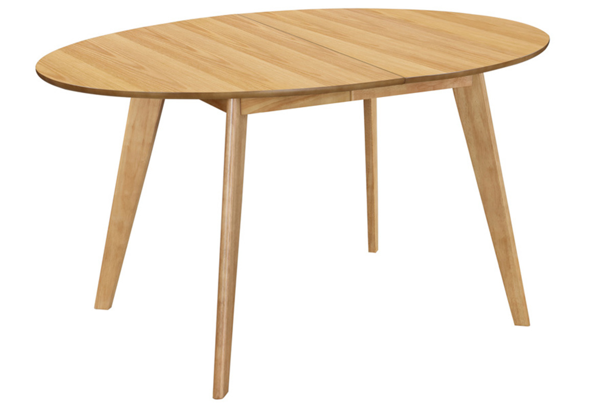

La table à manger MARIK, un modèle extensible tout en élégance et sobriété !Succombez au charme intemporel de cette table à rallonge. On aime tout sur ce modèle : la douceur des courbes de son plateau ovale, son placage chêne si chaleureux et sa rallonge assortie tellement pratique. Diner, brunch, repas de fête... cette jolie table s'adapte à toutes les occasions avec style ! Le piètement en bois massif offre une bonne résistance et le plateau en panneaux de fibres de bois un beau rendu. Idéale pour les petits espaces, cette table de 150 cm de longueur pliée n'encombre pas l'espace au quotidien.Si besoin, la table extensible MARIK passe de 4 à 6 couverts en tout simplicité. Tirez les deux extrémités de la table et ajouter la rallonge (qui se range séparément) au centre. Cette table à manger ovale passe alors de 150 à 200 cm pour accueillir confortablement 6 personnes.